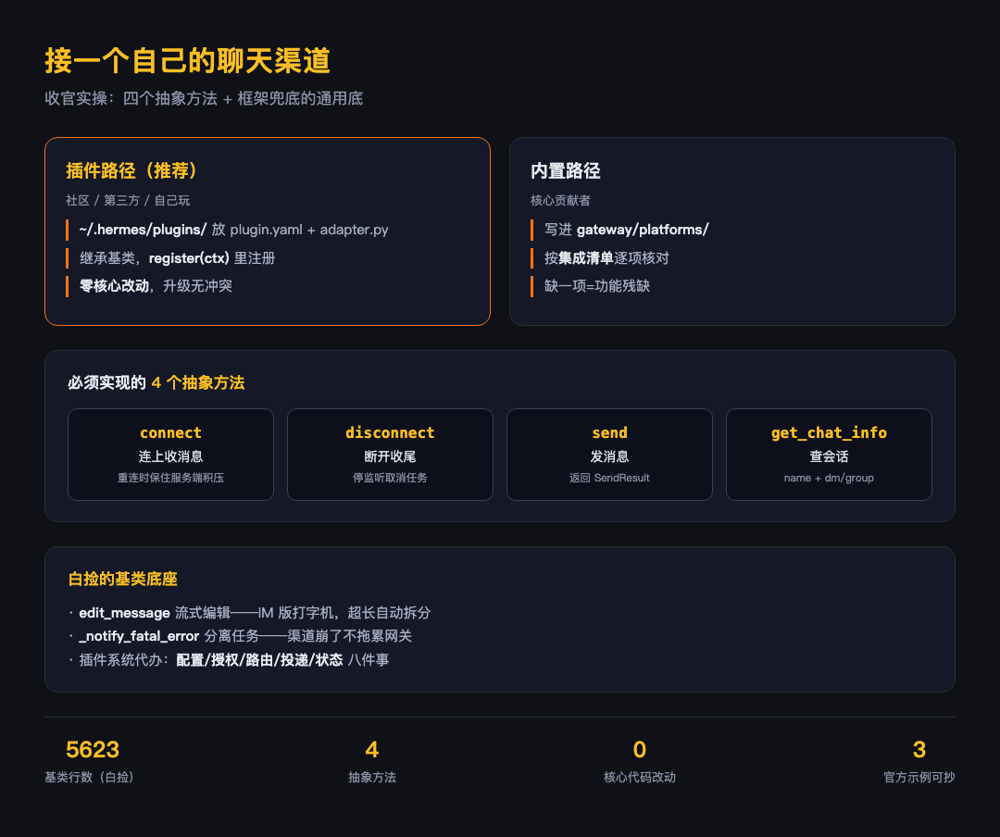

大家好我是郑同学。收官篇不铺新概念，动手：按仓库里的 ADDING_A_PLATFORM.md 流程，亲手给 Hermes 接一个新聊天渠道。这一篇同时是全系列的验收——三层架构、平台平权、统一消息模型，都得在你自己写的适配器里兑现。
● ● ●
ADDING_A_PLATFORM.md 开头就把路分成了两条。
There are two ways to add a platform to the Hermes gateway:
第一条是插件路径，官方给社区和第三方的推荐路径：在 ~/.hermes/plugins/（或仓库内 plugins/platforms/）建一个目录，放 plugin.yaml 和 adapter.py，适配器继承 BasePlatformAdapter，在 register(ctx) 入口里调 ctx.register_platform() 注册。文档原话给了承诺：This requires zero changes to core Hermes code——不动一行核心代码。
第二条是内置路径，给核心贡献者：直接把适配器写进 gateway/platforms/，配一份完整的集成清单，每一项都是真实接入点，缺一项就有功能残缺。
两条路的区别只在"代码放哪、注册怎么走"，适配器本身的写法是同一套。个人玩、公司内部用，走插件路径就够了——升级 Hermes 不用处理合并冲突。
● ● ●
基类 gateway/platforms/base.py（当前 5623 行）用 @abstractmethod 强制子类实现的是四个方法。
# gateway/platforms/base.py:2863（真实源码节选）
# 连上平台，开始收消息
# is_reconnect=False 是冷启动；True 是断线后重连——
# 有服务端积压队列的渠道（如 Telegram Bot API）要保住队列，
# 停机期间的消息不能丢；没队列的渠道可以忽略这个标记
@abstractmethod
async def connect(self, *, is_reconnect: bool = False) -> bool:
...
@abstractmethod
async def disconnect(self) -> None:
# 断开连接，停监听，收任务
...
@abstractmethod
async def send(
self,
chat_id: str,
content: str,
reply_to: Optional[str] = None,
metadata: Optional[Dict[str, Any]] = None
) -> SendResult:
# 发一条消息到指定会话，返回成功状态和消息 id
...
@abstractmethod
async def get_chat_info(self, chat_id: str) -> Dict[str, Any]:
# 返回这个会话的基本信息：name、type（dm/group/channel）
...
connect / disconnect / send / get_chat_info，四个动词。收消息走推送（webhook 类）或轮询（Bot API 类），发消息就一个 send。渠道差异被吸收在这四个方法的实现里。
内置路径的清单要求更全（ADDING_A_PLATFORM.md 的 Required methods 表）：再加 __init__ 配置解析、send_typing 打字指示、send_image 发图。插件路径按需补——基类里这些有默认实现，返回"本渠道不支持"。
● ● ●
写适配器不是从零开始。基类里已经备好的几件东西，随便点几个：
插件系统还在注册之外替你办了一串事，文档原话列的：适配器创建、配置解析、用户授权、cron 投递、send_message 路由、系统提示词注入、状态显示、网关装配。你写渠道差异，框架兜通用底。
● ● ●
plugins/platforms/ 里现成的参考实现：irc/、teams/、google_chat/。加上 mixin 组合（自己有特殊 UX 就写个 mixin 复用行为，像 WhatsApp 那样双渠道共享一套逻辑），一个能跑的适配器就是"四个抽象方法 + 平台协议对接"的工作量。写完它，你同时验证了：
cron_deliver_env_var 钩子，定时任务能直接投到你的新渠道（不加这个钩子，任务会正常触发但发送报 "No live adapter"——文档把这对钩子写成了必配组合）
● ● ●
九篇走完：三层架构（EP01）→ 运行主线（EP02）→ Agent Loop（EP03）→ 被接入（EP04）→ 记忆零件（EP05）→ 无人值守（EP06）→ 远程同构（EP07）→ 双层防线（EP08）→ 亲手接入（EP09）。
一条主线贯穿：Hermes 把"agent 本体"和"皮"切得足够开，开到每种边界都能换——前端可换、记忆可换、渠道可加、客户端可接入。桌面端只是这套架构顺手的产物之一，而你这 200 行适配器，是压垮"它只是个桌面 App"这个印象的最后一根稻草：它是一个能长出任意聊天天窗的 agent 运行时。
Hermes 桌面篇到这里收官。下一个系列见。
素材：gateway/platforms/ADDING_A_PLATFORM.md（两条路径、插件自动处理清单、钩子文档、Mixin 说明、Required methods 表）；gateway/platforms/base.py:2863-2924（四个抽象方法）、:2916（REQUIRES_EDIT_FINALIZE）、:2918（create_handoff_thread）、:2945（edit_message）、:2721（_notify_fatal_error）；whatsapp_common.py（Mixin 实例）；plugins/platforms/irc、teams、google_chat（示例）。